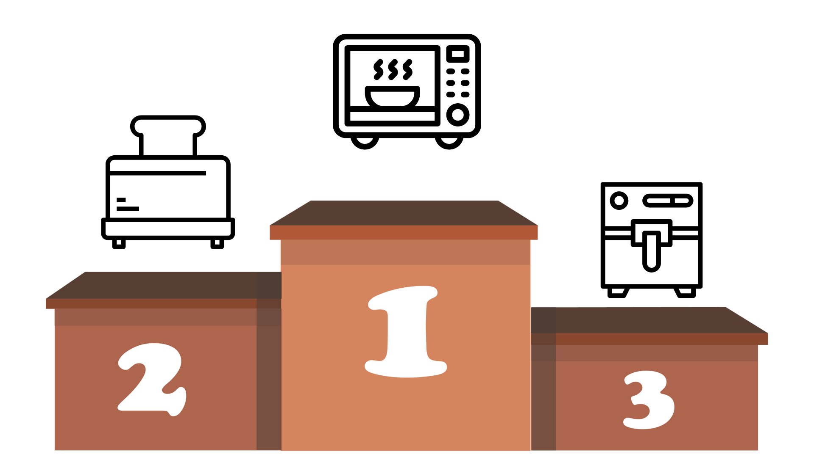

Cooking for a Cooler Planet
A guide for new cooks who want to make climate friendly meals and choices!
Foreward
We understand the struggle of learning to cook and eating healthy. With the internet, sure there are many places to find information, but it can be scattered and overwhelming. In your busy life, there are already plenty of things flooding your brain, but a good meal shouldn’t be one of them.
A fantasy utopia exists in the minds of those who dream that every bite helps the body and heals the planet. Eating green is the promise guaranteed to bridge the two worlds. Eating green is a diet rich in plant based foods such as roots, vegetables, fruits, and grains that prevents disease and supports a superb lifestyle supplying the nutrients a healthy human needs. This method is equally beneficial for the other partner in the relationship with humans: the Earth. Eating locally grown food, organic produce, or greens, significantly lowers the greenhouse gasses which coats our atmosphere like a blanket. A common misconception has plagued the conversation surrounding carbon emissions, as they are perceived as all harmful, when they are necessary in order for humans to survive. Greenhouse gasses act as insulators to Earth’s atmosphere, as they reflect the warmth given from the sun when it rises from the ground and attempts to escape.
However, the balance has been disrupted with the overproduction of carbon emissions which leads to the insulation of too much heat, suffocating the earth and preventing heat from escaping. The rise in temperature has led and will continue to follow through a chain reaction of change throughout the ecosystem that all affect one another. The ecosystem is all connected, even in unforeseen ways. When the carbon emissions increase, the temperature follows, causing ice caps to melt which raises sea levels and leads to flooding and other natural disasters, which is an economic and emotional catastrophe. A marine biologist might view this change as a tragedy for marine life, as a rise in sea temperature would lead to mass death to stretch across corals as bleaching events occur. 25% of marine life relies on coral reefs, so once coral dies, the animals that rely on them are in danger as a result.
Although this ecosystem shows how danger and harm can spread through its connective anatomy, positive events can ripple waves to the same extent. For example, eating green has an effect on not only one part of the environment, but many as that lifestyle carries through many corners of the ecosystem.
As of now, meat is generally a staple in American dishes. An average U.S. resident consumes 224.6 pounds of meat per year. Although meat is a delicious main course ingredient, not only is an excess amount dire for your health, it also has detrimental damage on the planet. Meats, and animal-based foods, are associated with the highest greenhouse gas emissions because of their processes of obtaining the food. With trees being cut down to make a grassland suitable for meat production and livestock releasing methane into the ecosystem, an unhealthy amount of greenhouse gasses continue to form in our atmosphere. 1 kilogram of beef, a meal for a party of 3 or 4 people, results in 70.6 kilograms of greenhouse gasses being released.
But don’t panic! While it's true that meat consumption has negative impacts on our environment, it isn’t necessary to discard it from your diet. We’re not demanding you to become fully vegan, or even vegetarian, in fact studies have shown that both mediterranean and vegan diets have significantly less of a carbon footprint compared to the average American. So, As you flip through the pages of this guide, you will find a plethora of Mediterranean and vegetarian recipes. Ranging from a filling dinner to a quick snack, we are assured you will find the perfect meal for your mood.
Getting Started
Methods of Cooking
It is very important to carefully select the method of cooking you will use. Kitchen appliances are the elements that actually use energy, and maybe even emit gasses, so the one you choose will greatly affect how climate friendly your cooking session will go. In the following section we will rank the most commonly used kitchen appliances and list their pros and cons so you can make a sustainable decision!
-
Microwave
- No wasted energy
- Small
- Fast
- .6-1.6 kwh
- 600-1500 watts
- Electric